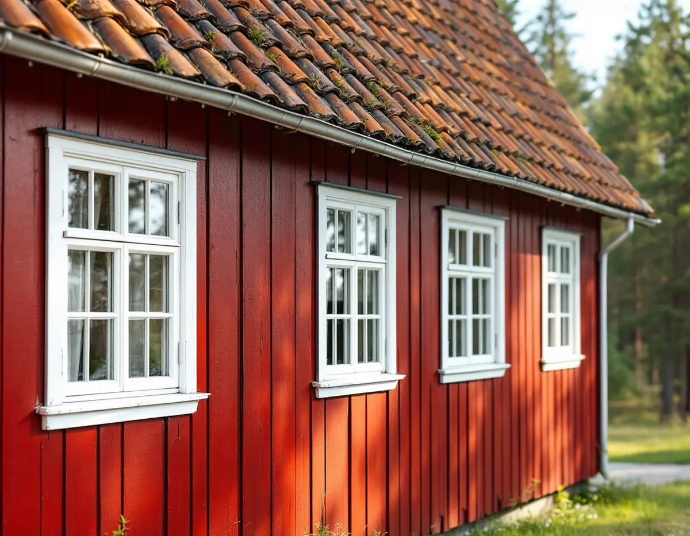
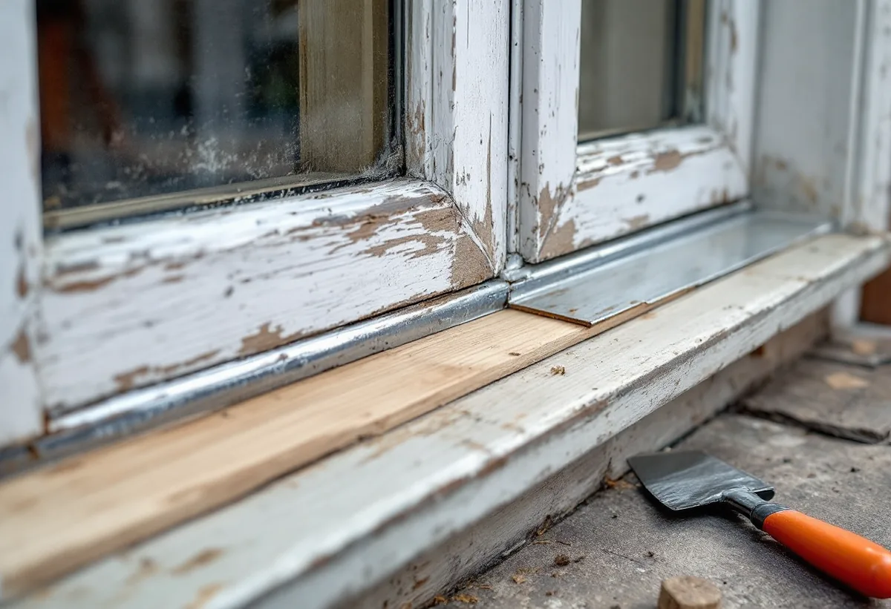

Kontroll nedtill
Vi känner efter röta i bottenstyckena och bakom hörnjärnen och ser hur blecket ansluter.

Rötskadorna på ett gammalt fönster sitter oftast nedtill, där vattnet rinner av.
Beskriv jobbet kort.
Något blev fel. Kontrollera uppgifterna eller ring 08 12 410 276.
Vi tittar på jobbet på plats innan du får offert.
Du ser vad som ingår och vad det kostar.
Vi drar av ROT direkt och sköter ansökan.
Geal Entreprenad AB, Bromma. Org.nr 559303-7566.

Geal Entreprenad AB renoverar fönster i Järfälla och lägger särskild vikt vid bottenstyckena, blecket och omfattningen – de delar som skyddar resten av fönstret och väggen bakom.
Järfällas kulturmiljöplan beskriver Stäkets villasamhälle, där de första villorna byggdes 1904 på branten ned mot järnvägen. Utformningen var ganska individuell och ofta med stor omsorg om detaljerna, och färgsättningen hölls enligt planen ursprungligen i rött eller ljusa oljefärger. Vid Bonäs lät bankdirektören Frans Hallberg 1907 bygga en stor villa i rödfärgad liggande panel, och både den och den gulmålade villan på Bonäsvägen 27 har fönsteromfattningar och övriga snickerier hållna i vitt.
För villorna längs Gyllenstiernas väg föreslår planen skyddsbestämmelser för några av de äldsta och mest välbevarade husen och i övrigt utökad lovplikt, med krav på utformning, materialval och färgsättning i samband med renoveringar. Kommunen skriver att fasadändringar på en- och tvåbostadshus inte kräver bygglov, men att det inte gäller en byggnad eller ett område som är särskilt värdefullt, eller där detaljplanen har utökad lovplikt. Byte av färg räknas som en fasadändring, så innan bågar eller omfattningar får en ny kulör kontrollerar vi vad detaljplanen säger.
Länsstyrelsernas fönsterblad förklarar att vattnet som rinner på fönstrets utsida gör den nedre delen särskilt utsatt. Det är i bågens och karmens bottenstycken som rötskador oftast uppstår, och man får också se upp med röta bakom hörnjärnen. Riksantikvarieämbetet skriver att skadorna i allmänhet uppstått för att väta under lång tid har kunnat tränga in i virket, medan den utsatta delen bara har kunnat torka långsamt. Skriften pekar också på ett samband mellan rötskador och rost på skruvar och beslag.
Riksantikvarieämbetet noterar att kärnfuru klarar stora påfrestningar, och det är sådant virke vi väljer till lagningarna. Är karmens bottenstycke skadat räcker det enligt Riksantikvarieämbetet i allmänhet att limma in nytt virke i karmens yttre, mest utsatta del – bara i enstaka fall måste hela bottenstycket bytas. I bågarna sitter skadorna ofta under hörnbeslagen och i fogarna, och därför räcker det sällan att bara byta det nedre bågträet. Rostiga beslag behöver inte kasseras: enligt fönsterbladet kan de oftast renoveras, och kopior av gamla modeller finns att köpa. Bladet påpekar också att gamla fönster är tillverkade av mycket bra virke, att det därför lönar sig att underhålla dem och att även svårt skadade fönster kan repareras med gott resultat.
Riksantikvarieämbetet beskriver fönsterblecket som en plåt som avleder vatten som annars kan skada karm och vägg. Blecket sitter fäst i karmens nederkant. Under 1800-talet fick det en bockad inslagskant, som först drevs in i karmen och sedan lades i ett spår som fanns färdigt i karmbottenstycket. Fönster i fasadliv har ibland också ett övre bleck. Vi ser därför lika noga på hur blecket ansluter till karmen som på själva plåten.
Fodret, eller omfattningen, är listerna som ramar in fönsteröppningen utvändigt och invändigt. På villorna vid Bonäs är de vita omfattningarna en del av husens uttryck, och vi lagar dem med samma profil i stället för att byta till enklare lister. Behöver panelen runt fönstret lagas, se snickare i Järfälla. Är fönstret för långt gånget beskriver vi alternativen under fönsterbyte i Järfälla.
Vi känner efter röta i bottenstyckena och bakom hörnjärnen och ser hur blecket ansluter.
Ska kulören ändras tar vi först reda på om huset omfattas av utökad lovplikt.
Lagning av båge, karm, bleck och omfattning redovisas var för sig.
Nytt virke limmas in där det gamla är skadat, och rostiga beslag rostskyddas.
Blecket läggs om mot karmen och omfattningen lagas med samma profil.
Grundning, kittning och linoljefärg i tunna lager med torktid emellan.
För småhus finns att reparera eller byta ut fönster, att måla fönster och att byta och reparera fönsterbleck på Skatteverkets lista över rotarbeten. I ett radhus som är en bostadsrätt ger fönsterbleck och fönstrens utsida däremot inget avdrag; där godkänns bara arbete på insidan av befintliga fönster, som tätningslist eller nytt glas i innerbågen.
Avdraget är högst 30 procent av arbetskostnaden och som mest 50 000 kr per person och år, eller 75 000 kr inklusive rutavdrag. Det gäller arbetskostnaden, inte material eller resor, och vi drar det direkt på fakturan.
Hur många bottenstycken som måste lagas, om blecket ska göras om, hur mycket av omfattningarna som är skadat och hur mycket gammal färg som ska bort styr priset mest. Efter ett gratis platsbesök får du ett skriftligt kostnadsförslag.
Byta eller renovera fönster.
Fönsterbyte i Stockholm →Takbyte, takbesiktning och plåtarbeten.
Takläggare i Järfälla →Jakobsberg, Viksjö och Kallhäll.
Takrenovering i Järfälla →Förråd, garage och ateljé som blir bostad.
Attefallshus i Järfälla →Planbesked, extra bostad och ansvar.
Byggföretag i Järfälla →Underhållsmålning i rätt tid.
Fasadmålning i Järfälla →Kedjehus, sekelskiftesvillor och parstuga i Stäket.
Fasadrenovering i Järfälla →Bruksvillor, radhus och 70-talsfönster i Järfälla.
Fönsterbyte i Järfälla →Radhus, kedjehus och souterränghus.
Badrumsrenovering i Järfälla →Kedjehus, egnahem och gamla golvskikt.
Golvläggare i Järfälla →Slipa och behandla trappan i huset.
Golvslipning i Järfälla →Kedjehus, radhus och souterräng.
Köksrenovering i Järfälla →Putsade radhus, kedjehus och villor i Järfälla.
Målare i Järfälla →Stuprör, skärmtak och plåttak i Järfälla.
Plåtslagare i Järfälla →Förgårdar, förråd och ytterdörrar.
Snickare i Järfälla →Lovfritt takbyte och papperen du sparar.
Takbyte i Järfälla →Ny tapet på skivväggar i radhus.
Tapetsering i Järfälla →Lovfritt, avvikelser och Kallhälls villor.
Tillbyggnad i Järfälla →Flytta badet och mät radon.
Totalrenovering i Järfälla →Eller ring 08 12 410 276, mån–fre 08–17.
Beskriv jobbet kort.
Något blev fel. Kontrollera uppgifterna eller ring 08 12 410 276.